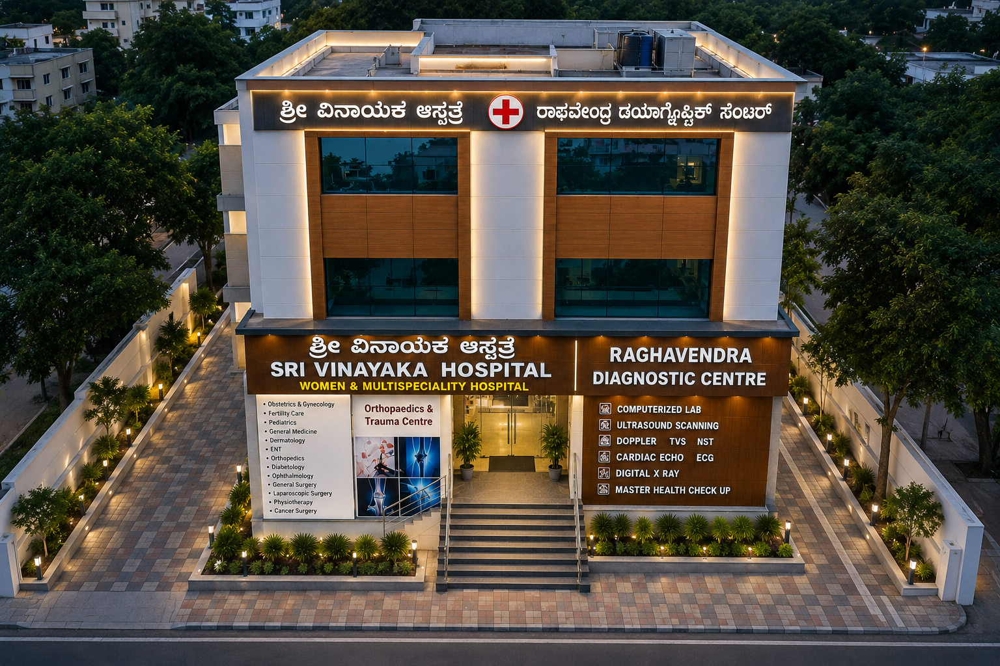
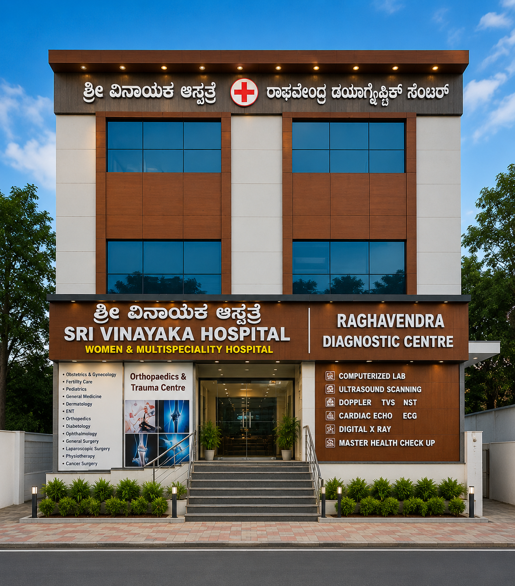

COMPASSIONATE CARE. ADVANCED HEALING.
Your Health,
Our Priority
Sri Vinayaka Hospital offers trusted medical care with modern facilities and a dedicated team for your well-being.
Care
Overview
Sri Vinayaka Hospital, Vijayanagar is a trusted healthcare center in Bengaluru, serving patients with quality medical care, modern facilities, and experienced doctors. Located at 1222, 80 Feet Rd, near Ganesha Temple, BDA Lay Out, Chandra Layout, Bengaluru, Karnataka 560040, our hospital is committed to providing compassionate and patient-focused treatment.
With 25+ years of experience and NABH recognized standards, Sri Vinayaka Hospital offers reliable healthcare services with advanced facilities for emergency care, diagnostics, consultations, surgery support, pharmacy, and general hospital services.

Address
Sri Vinayaka Hospital
Vijayanagar, 1222, 80 Feet Rd,
near Ganesha Temple, BDA Lay Out,
Chandra Layout, Bengaluru,
Karnataka 560040
Contact info
Email: srivinayakahospitalofficial@gmail.com
25+
Years Experience
Trusted healthcare service with experienced doctors and caring staff.
NABH
Recognized
Following quality standards for safe and reliable patient care.
24/7
Emergency Care
Emergency support and hospital facilities available for patients.
Our Doctors
We have experienced specialty doctors who bring years of medical expertise and provide quality treatment to ensure the best care for you.
Our Specialities
Through our medical specialities, we provide expert care with advanced treatment facilities for patients.
We Provide Best Care
Sri Vinayaka Hospital ensures quality healthcare services with experienced doctors, advanced medical technology, and patient-focused treatment.


Book Appointment
Fill your details and our team will contact you shortly.
Hello!
Your appointment booking is confirmed. Our team will get back to you shortly.